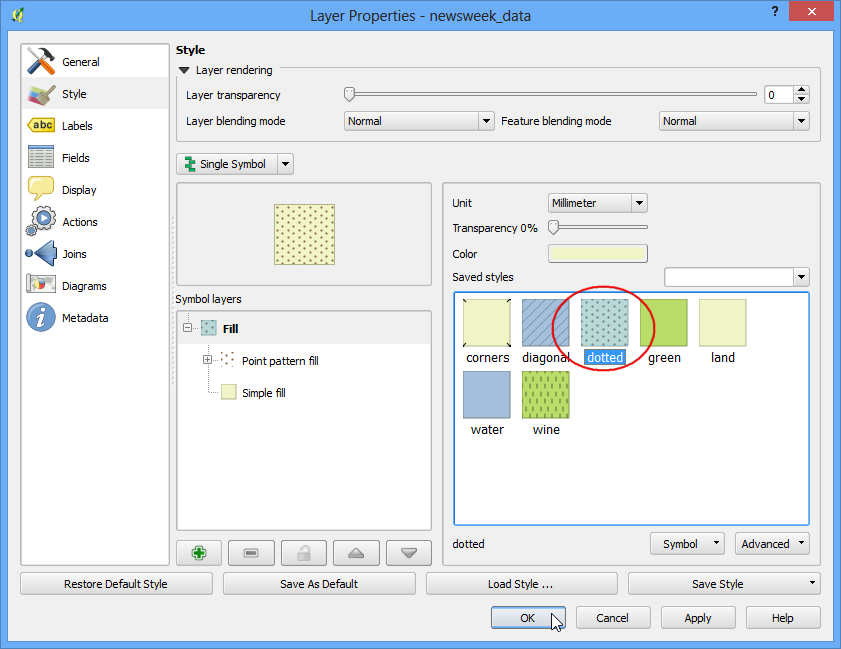
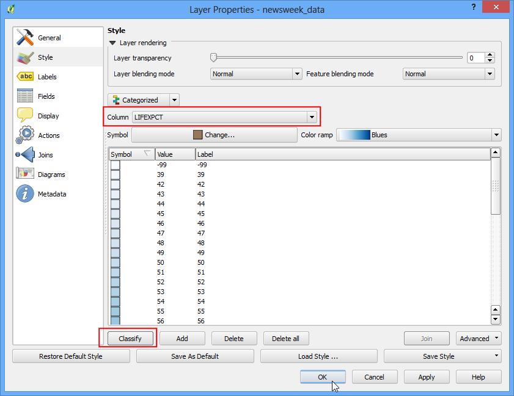

Styling Dasar Vektor
[ Download PDF A4 Letter ]
Untuk membuat sebuah peta, kita harus mengatur style data GIS dan menyajikannya dalam sebuah bentuk visual yang informatif. Terdapat banyak opsi yang tersedia di QGIS untuk mengaplikasikan tipe-tipe simbologi yang berbeda kepada pokok data yang ada. Dalam tutorial ini, kita akan mengeksplor beberapa styling dasar
Tinjauan Tugas
Kita akan menstyle sebuah layer vector untuk menunjukkan harapan hidup di beberapa negara di dunia.
Skill lain yang akan anda pelajari
Prosedur
Buka QGIS dan akses .

Jelajahi ke file``lifeexpectancy.zip`` dan klik Open . Pilih newsweek_data.shp dan klik Open . Berikutnya anda akan dibawa untuk memilih CRS. Pilih WGS84 EPSG:4326 sebagai System Referensi Koordinat (CRS).

File Shapefile yang berada di dalam file zip sekarang di buka dan anda anda dapat melihat style awal yang teraplikasi pada file ini.

Klik kanan pada nama layer dan pilih Open Attribute Table.

Eksplor attribut yang berbeda. Untuk menstyle sebuah layer, kita harus mengambil sebuah attribute atau column yang merepresentasikan peta yang kita coba hasilkan. Karena kita kita ingin membuat sebuah layer yang merepresentasikan layer harapan hidup, contohnya usia rata-rata maksimum seseorang yang hidup di sebuah negara, kolom LIFEXPCT adalah attribut yang ingin kita gunakan untuk styling.

Tutup tabel attribut. Klik kanan kembali pada layer dan pilih Properties.

Opsi styling yang beragam terletak di tab Style dari dialog Properti. Klik tombol drop-down adalam style dialog, anda akan melihat lima opsi tersedia - Single Symbol, Categorized, Graduated, Rule Based dan Point displacement . Kita akan mengeksplor tiga opsi pertama dalam tutorial.

Pilih Single Symbol . Opsi ini membolehkan anda untuk memilih sebuah style singel yang akan diaplikasikan pada semua fitur di layer. Karena ini adalah dataset poligon, anda mempunyai dua pilihan dasar. Anda dapat fill poligon, atau anda dapat menstyle hanya dengan outline , Anda dapat memilih isi berpola dotted dan klik OK.

Anda dapat melihat sebuah style baru teraplikasi pada layer dengan pola isi yang anda pilih.

Anda akan melihat bahwa style Simbol Singel tidak berguna dalam menghubungkan data harapan hidup yang akan kita coba untuk petakan. Mari kita mengeksplor opsi styling yang lain. Klik kanan layer dan pilih Properties. Kali ini pilih Categorized dari tab Style . Categorized berarti fitur-fitur dalam layer akan ditunjukkan dalam tingkat warna sebuah warna berdasarkan nilai unik dalam sebuah kolom attribut. Pilih nilai LIFEXPCT sebagai Column . Pilih pilihan anda dari color ramp dan klik Classify pada bagian bawah. Klik OK.

Anda akan melihat negara berbeda muncul dalam tingkat warna biru. Semakin terang warna berarti semakin rendah pula harapan hidupnya dan semakin gelap warna berarti semakin tinggi pula harapan hidupnya. Representasi dari data ini lebih berguna dan dengan jelas menunjukkan harapan hidup di negara berkembang dan negara maju. Ini bisa menjadi style yang bisa kita hasilkan.

Mari kita eksplor tipe simbol Graduated di dialog Style. Graduated symbology membuat kita bisa memilah data menjadi sebuah kolom dengan classes yang unik dan memilih sebuah style yang berbeda untuk tiap kelas. Terpikir untuk mengklasifikasi data harapan hidup kita ini menjadi 3 kelas. LOW, MEDIUM dan HIGH . Pilih LIFEXPCT pada Column dan pilih 3 sebagai kelas. Anda akan melihat bahwa ada banyak opsi Mode tersedia. Mari kita lihat kelogisan di balik setiap mode-mode ini. Terdapat 5 mode yang tersedia. Equal Interval, Quantile, Natural Breaks (Jenks), Standard Deviation dan Pretty Breaks . Mode ini menggunakan algoritma yang berbeda untuk memilah data ke kelas-kelas yang terpisah.
Interval sama: seperti namanya, metode ini akan menghasilkan kelas dengan ukuran yang sama. Jika data kita terentang dari 0-100 dan kita ingin 10 kelas, metode ini akan menghasilkan sebuah kelas dari 0-10, 10-20, 20-30 dan seterusnya, kelas-kelas mempunyai ukuran yang sama dari 10 unit.
Kuantil - Metode ini akan memutuskan kelas di mana jumlah nilai pada setiap kelas adalah sama. Jika terdapat 100 nilai dan kita ingin 4 kelas, metode kuantil akan menentukkan setiap kelas akan mempunyai nilai 25.
Natural Breaks (Jenks) - Algoritma ini mencoba untuk menemukan grouping natural dari data untuk menghasilkan kelas-kelas. Kelas yang dihasilkan akan memiliki varians maksimum di antara kelas individual dan varians minimum dalam kelas.
Standard Deviasi - Metode ini akan menghitung rata-rata data, dan menghasilkan kelas-kelas berdasarkan standard deviasi dari rata-rata.
Pretty Breaks - Ini berdasarkan algoritma pretty paket statistik R. Ini sedikit kompleks, tapi pretty di sini berarti ini menghasiljan batas kelas dalam bilangan bulat
Untuk menjaganya tetap simpel, mari gunakan metode Quantil. Klik Classify di bagian bawah dan anda akan melihat 3 kelas yang muncul dengan nilai masing-masing. Klik OK.
Catatan
Untuk sebuah attribut yang digunakan distyle Graduated style, diharuskan menggunakan numerik. Bilangan bulat dan Real tidak apa-apa, tetapi jika tipe kolomnya adalah String, ini tidak dapat digunakan untuk style opsi ini.

Anda akan melihat sebuah peta yang menunjukkan negara-negara dalam 3 warna merepresentasikan harapan hidup rata-rata sebuah negara.

Sekarang kembali ke dialog xxx dengan mengklik kanan layer dan memilih xxx . Terdapat beberapa lagi opsi style yang tersedia. Anda dapat mengklik Simbol untuk setiap kelas dan memilih style yang berbeda. Kita akan memilih warna isian merah, kuning, dan hijau untuk mengindikasikan rendah, medium dan tingginya harapan hidup.

Pada dialog Symbol Selector, klik Color selector.

Klik sebuah warna dari dialog Select Color.

kembali ke dialog Layer Propertie, anda dapat mengdouble klik kolom :guilabel:`Label untuk setiap nilai dan memasukkan teks yang ingin anda tampilkan. Dengan cara yang serupa, anda juga bisa mengdoubloe klik kolom Value untuk mengedit jangkauan yang terpilih. klik OK ketika anda puas dengan kelasnya.

Style ini secfara definitif menyampaikan map yang jauh lebih berguna daripada dua percobaan sebelumnya. Terdapat nama kelas yang tertanda dengan jelas dan warna-warna untuk mewakili intepretasi kita pada nilai harapan hidup.